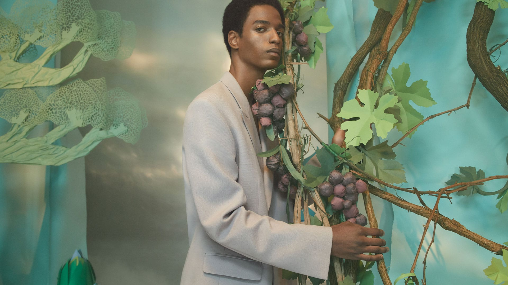
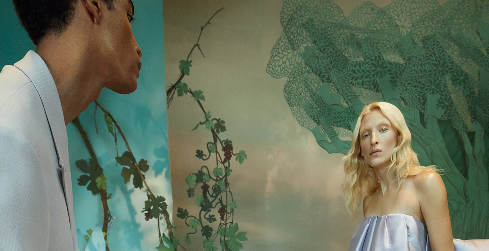

고대 공중정원의 아름다운 전설에 영감을 받은 조 말론 런던의 새로운 컬렉션, 로스트 인
원더.
새롭게 선보이는 ‘피그 앤 로터스 플라워’ 코롱과 ‘사이프러스 앤 그레이프바인’
코롱 인텐스를 만나보세요.
고대 공중정원 전설 속 반짝이는 연못.
그 수면 위를 스치듯 피어난 달콤한 연꽃.
물기를 머금은 섬세한 꽃잎이 그늘진 통로를 따라 미끄러지듯 닿은 곳에 서 있는 울창한
무화과 나무. 과즙을 가득 머금은 무화과의 향과 연꽃이 만나 라이트 플로랄 향을
완성합니다.
마지막으로 네롤리 향이 더해져 풍성한 공중정원의 대미를 장식합니다.
탑 노트 : 무화과 리프
스템원® 분자는 푸르른 잎의 신선함을 고스란히 전달하며, 락토닉 톤과 결합하여 독특하고
밀키한 무화과 잎의 향을 선사합니다
하트 노트 : 로터스 플라워 (연꽃)
촉촉하고 신선한, 물 위에 떠있는 꽃을 대표하면서 우아한 빛을 지닌 플로랄 하트 노트를
창조해 냅니다
베이스 노트 : 베티버
대지의 느낌을 풍부하게 지닌 향. 풀의 느낌을 주는 향이 시트러스한 탑 노트와 잘
어울리고, 우아하면서도 우디한 강렬함이 향을 깊고 그윽하게 만들어 줍니다
푸르고 울창한 수풀에서 펼쳐지는 축제.
고대 전설 속 공중정원의 광활한 테라스와
고결한 아치형 구조물에 활기가 더해집니다.
조각 같이 서 있는 사이프러스 나무의
신선하고 아로마틱한 향이 포도 덩굴의 우디한 노트와 만나 주변 공기를 가득 채웁니다. 이
파릇파릇한 향에 앰버 베이스가 더해져 깊이를 더하고 더욱 대담한 향을 완성합니다.
탑 노트 : 사이프러스
나무 수액의 향을 지닌 우디 노트가 아로마의 신선함을 향에 부여 합니다
하트 노트 : 그레이프바인
풍성한 포도덩굴에서 영감을 얻은 관능적인 우디 노트.
천연 시더우드와 베티버 향이 혼합되어 있고, 따뜻한 앰버와 과즙이 풍부한 포도 노트가
더해졌습니다
베이스 노트 : 모스
신선한 비로 촉촉해진 덤불이 연상되는 향.
모스의 푸르름이 향의 베이스를 우디한 따뜻함과 대지의 느낌으로 더욱 포근하게 표현해
줍니다
사이프러스 앤 그레이프바인과 피그 앤 로터스 플라워를 페어링 해
모던하고 상쾌한 향을 경험해 보세요.
영국 정통의 향수 & 라이프 스타일 브랜드, 조 말론 런던
조 말론 런던은 브리티시 정통 스타일의 독창적이고 품격 높은 부티크 향수 브랜드입니다.
1994년에 탄생한 조 말론 런던은 모던한 브리티쉬 스타일을 대변하며 전세계적으로 사랑 받고
있습니다.
절제와 참신함, 우아함과 과감함, 고상함과 위트. 상반된 매력을 동시에 가지고 있는 조 말론
런던은 다른 곳에서는 만날 수 없는 특별한 서비스를 제공합니다. 두 가지 이상의 향을 조합하여
새로운 향을 만들어내는 프레그런스 컴바이닝™은 조 말론 런던 고유의 기술입니다. 프레그런스
컴바이닝™을 통해 나만을 위한,그녀만을 위한, 그만을 위한 특별한 향을 선물을 준비할 수
있습니다. 조 말론 런던 부티크에서는 그 누구에게든 가장 특별한 선물을 전달할 수 있도록 고객
맞춤 프레그런스 컨설팅 서비스를 진행합니다. 보는 것만으로도 설레는 크림 박스와 블랙 리본의
세련된 포장, 그리고 그 안에 담긴 특별한 조 말론 런던의 향기는 오래도록 기억되는 최고의
선물이 될 것입니다.